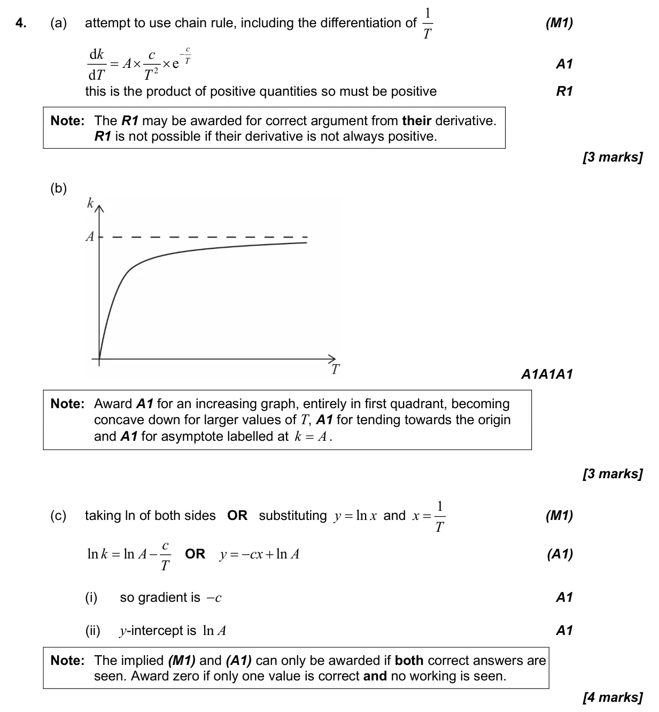
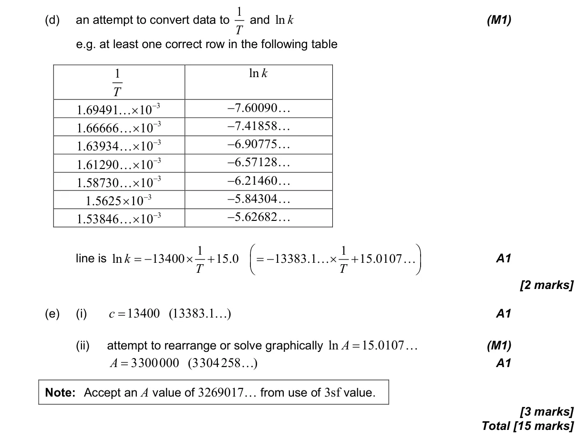

15 marks P2 TZ2 Calculator 2.10 Logarithmic scales and linearising data2.3 Graphs of functions5.9 Further differentiation: standard derivatives, chain, product and quotient rules, related rates5.2 Increasing and decreasing functions4.4 Pearson's, scatter diagrams and equation of y on x Question Hide breakdown abcde Markscheme 